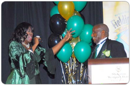
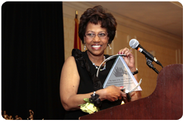
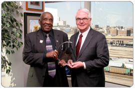

54th Anniversary Celebration
Mathews-Dickey Marks Nearly Six Decades of 'We The People' Concept at 2014 Anniversary Celebration
“It’s never been about ‘I, you or they.’ It’s all about ‘we’ — working together as a team to achieve
common goals,” says President, CEO & Co-Founder Martin Luther Mathews

Renowned vocalist Sandra Jamerson serenades Mr. Mathews with her rendition of the famous "Birthday Song".

The In Appreciation of the Year Award Winner is Robert Russell, Jr. poses for a photo with club Founder & CEO, Martin Mathews.

Sharon Stevens accepting the Rev. William G. Gillespie Spirit of St. Louis Award on behalf of Lynn Beall.

Rev. William G. Gillespie Spirit of St. Louis award winner, Chairman, President & CEO of Ameren Corporation, Thomas Voss.
VIEW MORE IMAGES IN
OUR PHOTO GALLERY
The Mathews-Dickey Boys’ & Girls’ Club celebrates its 54th Anniversary Alumni Celebration & Awards Showcase on Feb. 15 and 16. The theme of this two-day event is “We the People” in recognition of the Club’s efforts to build coalitions via businesses, churches, families, schools and the police on a local, state and national basis.
“As I approach my retirement this November, my most cherished legacy is pointing our youth in the right direction by educating them on the front end and keeping them from falling through the cracks on the back end,” said President, CEO & Co-Founder Martin Luther Mathews. “My challenge is for the community to come together to resolve the problems that plague our youth and give them the bright future they so richly deserve as productive, tax-paying citizens.”
Festivities kick off with an invitation-only, black-tie optional alumni celebration at 5 p.m., Saturday, Feb.15 in the Grand Ballroom at the Hilton St. Louis Airport, 10330 Natural Bridge Rd., St. Louis, MO 63134.
KTVI Fox 2’s Bonita Cornute and veteran broadcaster Bill Wilkerson are co-emcees, and KMOV-TV Channel 4 Sports Director Maurice Drummond presents the Sports Awards. Headlining the entertainment is the Fusion Avenue Blues Band, Collage Pianist Tim Huskey, professional recording artist Jamie “King James” Dennis, The Triple Tz, and international vocalist Sandra Jamerson of Chicago.
VP, PR & Special Events Barbara A. Washington provides the welcome and Board Chairman Rev. Earl E. Nance, Jr. presents the highest honor, The Rev. William G. Gillespie Spirit of St. Louis Award, to the 22nd Judicial Circuit Judge Jimmie Edwards. The Meritorious Service Award goes to Vivint Gives Back and the In Appreciation of the Year plaque is bestowed upon Rev. Robert S. Griffin, Christian Embassy Church pastor.
Outstanding Alumni honorees are Nicole Colbert-Botchway, attorney, Office of the Missouri Attorney General, and Hazelwood School District Superintendent Dr. Grayling Tobias.
Club Board Education Chair Keith Williamson, Centene’s executive vice president, corporate secretary & general counsel, bestows the third annual $1,000 Dr. Cleveland Hammonds, Jr. Scholarship upon Candice Perkins. Taking part in the ceremony are Hammonds’ widow Yvonne and SIUE Department of Educational Leadership chair Dr. Linda Morice.
Trophies are presented to 500+ youth athletic achievers at 1 p.m., Sunday, Feb. 16 at Mathews-Dickey Richard B. Loynd Gym, 4245 N. Kingshighway Blvd. Club VP/Sports & Operations Tom Sullivan and Director of Sports & Operations Leroy Witherspoon emcee the gala.
Major event sponsors are Ameren, Emerson and Clayco. The Club is a 501 (c)(3) United Way member agency that annually provides structured athletic, educational and cultural activities for more than 40,000 young men and women, ages 5-18. The Club believes that athletics and academics can and should co-exist. For more information, call Washington or Bill Fronczak at (314) 382-5952, ext. 234.
The roll call of award winners also includes:
VOLUNTEERS OF THE YEAR MEDALS OF EXCELLENCE
|
SPORTS |
Major sponsors of the anniversary celebration were Ameren Missouri, Emerson, INTERCO Charitable Trust and United Way of Greater St. Louis. Mathews-Dickey provides structured athletic, educational and cultural-enrichment activities for more than 40,000 young men and women annually. For more information, call Barbara Washington or Bill Fronczak at (314) 382-5952, ext. 234.
©2013 Mathews-Dickey Boys' & Girls' Club. All Right Reserved.
Site Designed & Donated by Dayton Ohio Web Site Design
Mathews-Dickey Boys' & Girls' Club is a nonprofit 501 (c) (3) United Way member agency that annually provides educational, athletic and cultural enrichment programs to more than 40,000 young people from throughout the St. Louis metropolitan area. For 52 years the Club has taught youth respect, restraint and responsibility so that they may obtain credibility, integrity and accountability. For more information, call Barbara A. Washington or Bill Fronczak at (314) 382-5952, ext. 234.